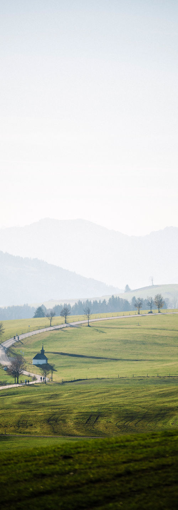

Ihr bei uns
Fragen, Termine, Besichtigung? Meldet euch – wir freuen uns auf euch.
So erreicht ihr uns
-
Anschrift
Wertacher Mühle, Sonnenhof e.V.
Vorderschneid 7
87497 Wertach (im Allgäu) -
Telefon
08365 / 1628
Am besten vormittags oder abends – tagsüber sind wir viel im Haus und Garten unterwegs. -
E-Mail
Wertachermuehle@web.de
Schreibt uns, wer ihr seid und wann ihr kommen möchtet. -
Mühlesocial
Instagram @wertacher_muehle
Facebook

Anfahrt
Mit dem Auto: Über die A7 bis zur Ausfahrt Oy-Mittelberg, weiter auf der B310 Richtung Wertach / Oberjoch. In Wertach der Beschilderung Richtung Vorderschneid folgen – die Mühle liegt alleinstehend am Ortsrand. Fürs Navi: Vorderschneid 7, 87497 Wertach. Parkplätze gibt es direkt am Haus.
Mit Bahn und Bus: Bahn bis Kempten oder Sonthofen, weiter mit dem Bus nach Wertach. Abholung von der Bushaltestelle nach Absprache.